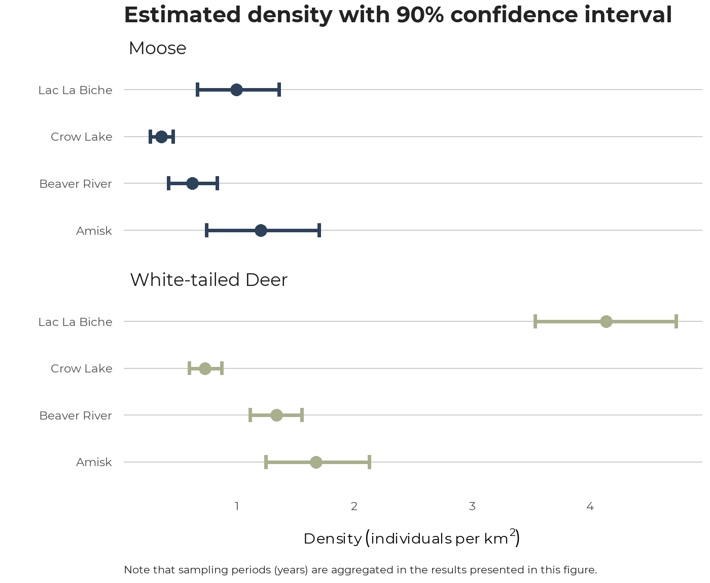

This package provides access to the Alberta Biodiversity Monitoring Institute’s (ABMI) camera-level animal density estimates, which can be used to estimate the density (and associated confidence bounds) of various species in a user-defined area of interest.
This package currently contains data from ABMI camera deployments put out between 2014 and 2019, as well as data on the following species:
Current (as of 2019) geographic coverage of sampling in the province can be seen in the map below:
Note that there are four cameras deployed at each ABMI site, 600-m apart. Each point on the plot represents a site, which has four deployments. See here for detailed explanation of remote camera trap protocols.
The primary objective of this package is to allow users to estimate the density of a species of interest in an area of interest. For this objective, three steps are neccessary:
# Load package library(abmi.camera.extras) # Load packages for working with spatial data and plotting results library(sf) # Note: sp objects will also work. # library(sp) library(ggplot2)
The first step is to define an area of interest, such as a Wildlife Management Unit, Municipality, Land Use Planning Region, etc. Below, this is done using the sf package to read into R a shapefile of four WMUs - Crow Lake (code 512), Lac La Biche (503), Beaver River (502), and Amisk (504) - all of which are located in the central-east part of Alberta.
# Define aoi sf_wmu <- sf::st_read(system.file("extdata/wmu_sample.shp", package = "abmi.camera.extras"), quiet = TRUE) # Take a look at structure and attributes tibble::glimpse(sf_wmu)
## Rows: 4
## Columns: 6
## $ OBJECTID <dbl> 25, 34, 49, 50
## $ WMUNIT_NAM <chr> "Crow Lake", "Lac La Biche", "Beaver River", "Amisk"
## $ WMUNIT_COD <chr> "00512", "00503", "00502", "00504"
## $ Shape_STAr <dbl> 8018929846, 3220514507, 3585827617, 2704241428
## $ Shape_STLe <dbl> 476404.3, 355774.1, 293530.4, 252285.2
## $ geometry <POLYGON [m]> POLYGON ((754560.7 6209247,..., POLYGON ((713202...Next, we subset ABMI camera deployments spatially with the ace_get_cam() function:
# Retrieve deployments in aoi as dataframe df_deployments <- ace_get_cam(aoi = sf_wmu, group_id = WMUNIT_NAM, # Use `id` to define identifier (e.g. WMU name) crs = 4326) # If desired, (re)project using the `crs` argument # Plot deployments sf_wmu <- st_transform(sf_wmu, "+init=epsg:4326") plot(df_deployments$geometry, pch = 21, cex = 0.7, col = "#2D415B", bg = "gray80") plot(sf_wmu$geometry, border = "gray20", col = NA, add = TRUE)
# Remember that each point represents an ABMI site, which has four camera deployments spaced 600-m apart.
Users may wish to spatially subset their own dataframe of camera deployments locations, instead of retrieving the ABMI’s. This can be done by supplying the dep = argument in ace_get_cam(), along with specifying which columns hold the lat/long coordinates in the coords = argument.
From here we can join density estimates for a species of interest in a given sampling period for each deployment using the ace_join_dens() function:
# Join density df_dens <- ace_join_dens(x = df_deployments, species = c("Moose", "White-tailed Deer"), # See ?ace_join_dens for list of available species # samp_per = "2018", option to define specific sampling period if desired nest = FALSE) head(df_dens, 10)
## Simple feature collection with 10 features and 5 fields
## geometry type: POINT
## dimension: XY
## bbox: xmin: -112.6051 ymin: 55.9708 xmax: -112.2392 ymax: 55.97986
## geographic CRS: WGS 84
## name samp_per WMUNIT_NAM common_name density
## 1 ABMI-632-NW 2015 Crow Lake Moose 2.0960753
## 2 ABMI-632-NW 2015 Crow Lake White-tailed Deer 8.7893520
## 3 ABMI-632-SE 2015 Crow Lake Moose 1.8495771
## 4 ABMI-632-SE 2015 Crow Lake White-tailed Deer 0.5805277
## 5 ABMI-632-SW 2015 Crow Lake Moose 1.6909176
## 6 ABMI-632-SW 2015 Crow Lake White-tailed Deer 3.0587292
## 7 ABMI-633-NE 2015 Crow Lake Moose 0.0000000
## 8 ABMI-633-NE 2015 Crow Lake White-tailed Deer 0.0000000
## 9 ABMI-633-NW 2015 Crow Lake Moose 0.0000000
## 10 ABMI-633-NW 2015 Crow Lake White-tailed Deer 0.0000000
## geometry
## 1 POINT (-112.6051 55.97986)
## 2 POINT (-112.6051 55.97986)
## 3 POINT (-112.6051 55.97986)
## 4 POINT (-112.6051 55.97986)
## 5 POINT (-112.6051 55.97986)
## 6 POINT (-112.6051 55.97986)
## 7 POINT (-112.2392 55.9708)
## 8 POINT (-112.2392 55.9708)
## 9 POINT (-112.2392 55.9708)
## 10 POINT (-112.2392 55.9708)Note that the samp_per column refers to sampling period, which, in the case of the ABMI, is done yearly.
The distribution of density values is typically right-skewed, with most cameras not detecting any individuals (0 density), some that detect a small number of individuals just passing by (low density), and a few who capture longer periods of animal activity (high density).
The last step is to estimate the density of each of the species defined previously in the area of the interest, which can be done with the ace_summarise_dens() function.
# Summarise density df_dens_summary <- ace_summarise_dens(x = df_dens, group_id = WMUNIT_NAM, # to group deployments when evaluating multiple aoi or treatments agg_samp_per = TRUE, # option to aggregate sampling periods samp_per_col = samp_per, # to indicate which column refers to sampling period to group on species_col = common_name, # to indicate which column refers to species to group on dens_col = density, # column where density values are held conflevel = 0.9) # for confidence interval - default 90%
Note that ace_summarise_dens() can be used independently of the first two functions if the user wishes to summarise external density data. If supplying your own dataframe (i.e. df_dens), rather than using output from the first two functions, make sure that the data is formated in a tidy way. Each row should represent an observation of density at a single deployment, and each column a variable (e.g. species, treatment, sampling period). The arguments samp_per_col, species_col, and dens_col can be used to customize the call of ace_summarise_dens to suit your data.
The output is a dataframe with the following attributes (beside the grouping variable, year, and species):
occupied - number of deployments with a individual of that species presentn_deployments - total number of deploymentsprop_occupied - proportion of deployments occupieddensity_avg - estimated density for the area/year/species combinationdensity_lci - lower bounds of confidence interval (level specified in conflevel attribute)density_uci - upper bounds of confidence intervalThe precision of the density value is estimated through Monte Carlo simulation using the delta method. Note that some ABMI camera deployments are set up with a lure; the subsequent density estimates have been adjusted to facilitate comparison with non-lured estimates when summarising animal density for an aoi.
Note that this family of three functions is designed to work with a pipeline-based workflow, and can be re-written in the following way:
# Pipeline workflow df_dens_summary <- sf_wmu %>% ace_get_cam(group_id = WMUNIT_NAM) %>% ace_join_dens(species = c("Moose", "White-tailed Deer")) %>% ace_summarise_dens(group_id = WMUNIT_NAM, agg_samp_per = FALSE, samp_per_col = samp_per, conflevel = 0.9) # Results from Crow Lake WMU df_dens_summary %>% ungroup() %>% mutate(common_name = ifelse(common_name == "White-tailed Deer", "WTD", common_name)) %>% rename(WMU = WMUNIT_NAM, year = samp_per, species = common_name) %>% filter(WMU == "Crow Lake") %>% mutate(WMU = "512") %>% arrange(species, year) %>% kable()
| WMU | year | species | occupied | n_deployments | prop_occupied | density_avg | density_lci_0.9 | density_uci_0.9 |
|---|---|---|---|---|---|---|---|---|
| 512 | 2015 | Moose | 6 | 15 | 0.4000000 | 0.4191881 | 0.1958320 | 0.6737829 |
| 512 | 2016 | Moose | 10 | 24 | 0.4166667 | 0.4972947 | 0.2871185 | 0.7336256 |
| 512 | 2017 | Moose | 6 | 24 | 0.2500000 | 0.2781682 | 0.1140484 | 0.4923659 |
| 512 | 2018 | Moose | 4 | 15 | 0.2666667 | 0.2258010 | 0.0612437 | 0.4340766 |
| 512 | 2015 | WTD | 8 | 15 | 0.5333333 | 2.1687743 | 1.2185272 | 3.2229538 |
| 512 | 2016 | WTD | 17 | 24 | 0.7083333 | 0.2744533 | 0.1988421 | 0.3565054 |
| 512 | 2017 | WTD | 7 | 24 | 0.2916667 | 0.1913708 | 0.0878864 | 0.3197781 |
| 512 | 2018 | WTD | 10 | 15 | 0.6666667 | 0.9047140 | 0.5444169 | 1.3414999 |
We can visualize the density results (this time aggregated by year, or sampling period) like so:
df_dens_summary_agg <- sf_wmu %>% ace_get_cam(group_id = WMUNIT_NAM) %>% ace_join_dens(species = c("Moose", "White-tailed Deer")) %>% ace_summarise_dens(group_id = WMUNIT_NAM, agg_samp_per = TRUE, conflevel = 0.9)
